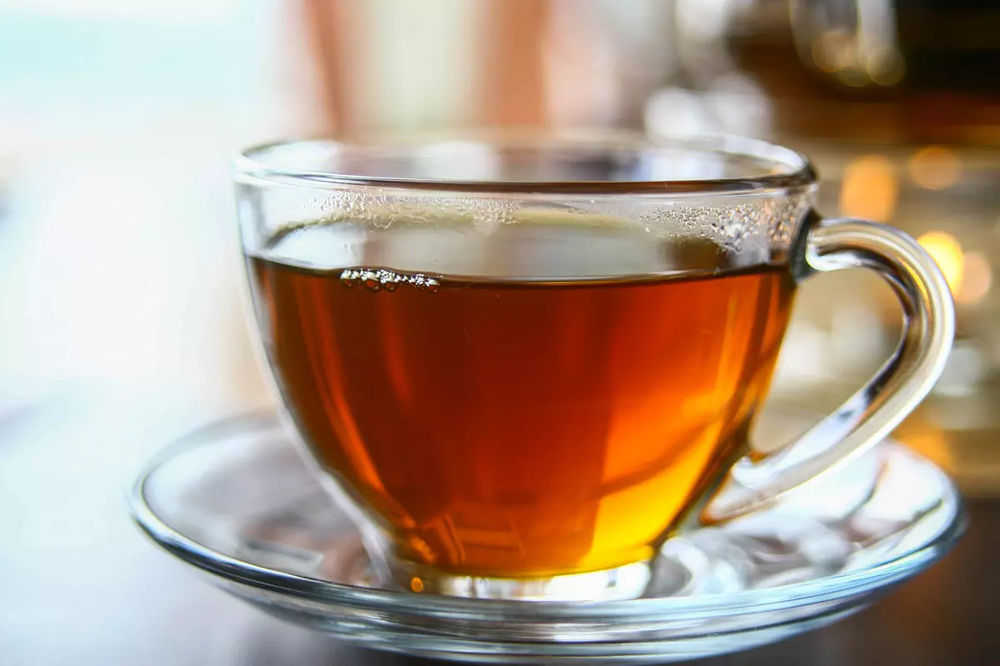
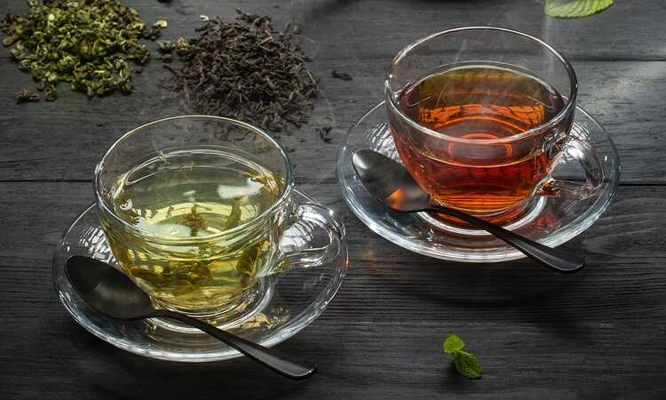

| Название |
Вкус |
Цвет |
| Зелёный |
Вкус мгкий, сладкий, с горчинкой |
Зелйный |
| Чёрный |
в начале глотка имеет свежий и сладкий вкус, слегка горьковатый. Послевкусие длится и постепенно меняется, горечь уходит, сладость становится ярче |
Оранжевый или красный |
Сейчас я вам расскажу о двух самых популярных видо в чая: чёрном и зелёном.
Эти чаи вы пьёте поведневно и наверняка хотите по болше о них узнать.
Чёрный чай — вид чая, подвергающийся полной ферментации в течение от двух недель до месяца. Традиционно наиболее популярный вид чая в Европе, включая Россию. Название «чёрный чай» закрепилось в Европе, в китайском языке этот тип чая называется кра́сным, такой цвет он имеет в заваренном виде.
 Зелёный чай — чай, подвергнутый минимальной ферментации. И зелёный, и чёрный чай получают из листьев одного и того же чайного куста, однако различными способами.